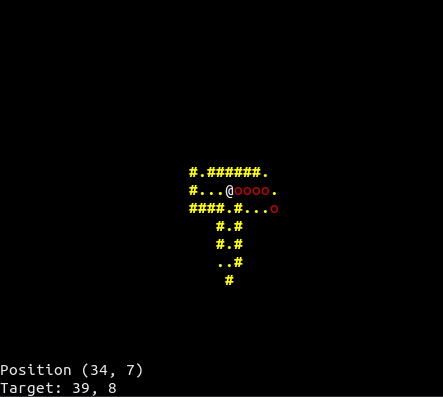

This is a personal site containing nothing interesting, there isn’t a main topic; I’ll simply upload anything that I want keep track of. The site is generated with Hugo, a cool static site generator, I realized this minimal theme using this pre-existing theme and Skeleton, a barebones CSS framework (yep I’m really funny).
This site is simple for two three reasons:
- the less features I implement the less feature I have to repair when something broke
- I’m a lazy man (ok, maybe this reason would be enough)
- Using Vim to write these posts is fantastic…
Ah, another thing: I’m not a native english speaker, so be clement please. Since I don’t know what else to write I’ll leave you with this hypnotic gif.
